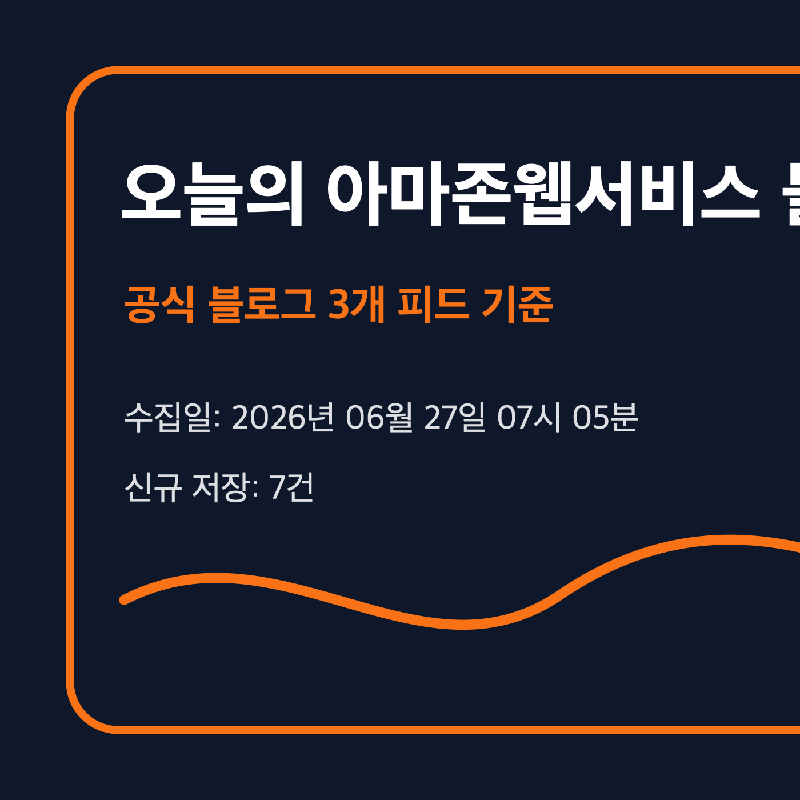
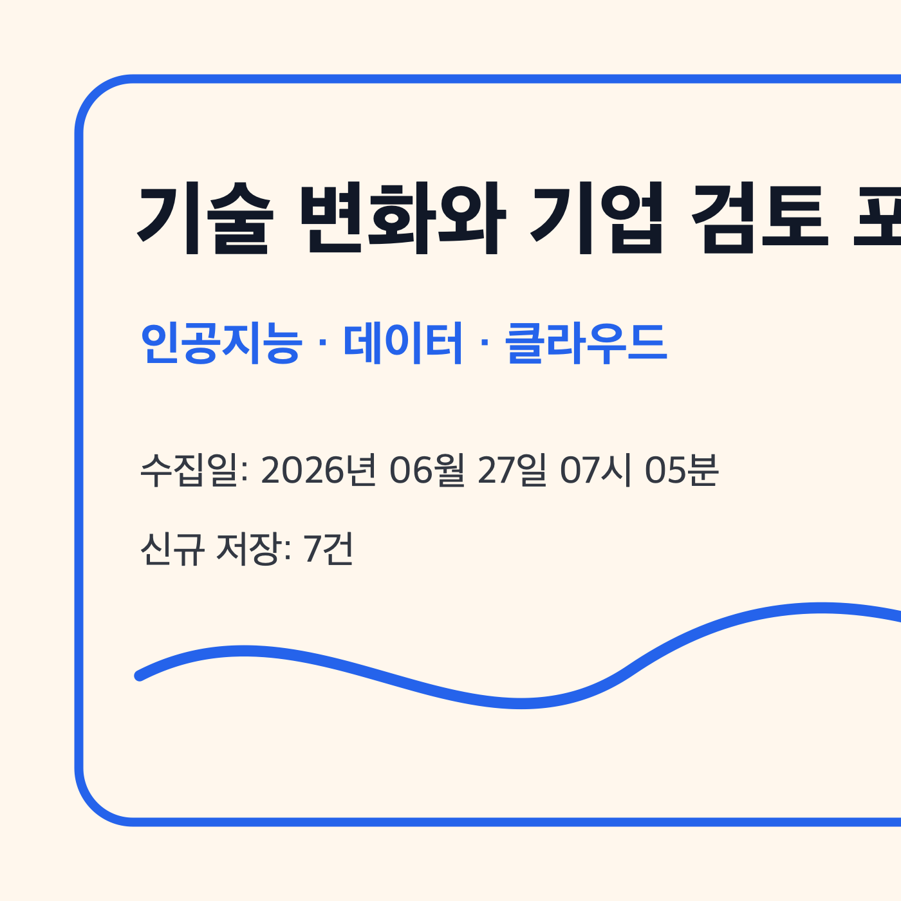
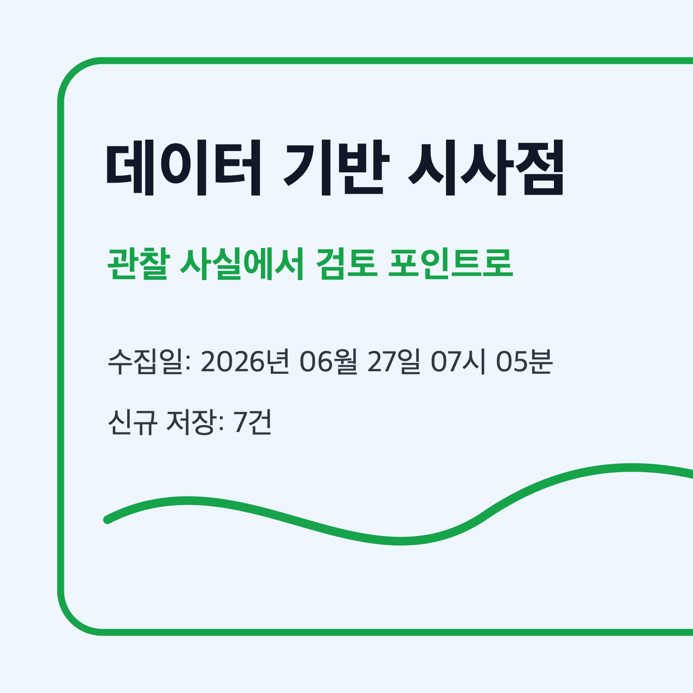

아마존 심플 스토리지 서비스 기반 대화형 피디에프 텍스트 추출
문서에서 필요한 텍스트를 즉시 추출하려는 업무 수요가 확인되었습니다. 기업은 비정형 문서 검색, 권한 관리, 감사 대응을 함께 검토해야 합니다.
주요 기술: 아마존웹서비스 람다, 아마존 심플 스토리지 서비스
원문 보기이 문서는 한국시간 2026년 06월 27일 07시 05분에 수집한 공식 블로그 피드와 저장된 원문 마크다운을 기준으로 작성했습니다. 확인되지 않은 판단은 확정하지 않고 확인 필요로 표시했습니다.

문서에서 필요한 텍스트를 즉시 추출하려는 업무 수요가 확인되었습니다. 기업은 비정형 문서 검색, 권한 관리, 감사 대응을 함께 검토해야 합니다.
주요 기술: 아마존웹서비스 람다, 아마존 심플 스토리지 서비스
원문 보기보험 중개 업무처럼 도메인 지식과 반복 백오피스 작업이 결합된 영역에서 산업 특화 인공지능 적용 사례가 관찰되었습니다.
주요 기술: 아마존 베드록
원문 보기금융 컴플라이언스 검토에서 인공지능 에이전트를 활용하되 인간 검토를 유지한 사례가 확인되었습니다. 자동화 효과와 통제 설계가 함께 제시되었습니다.
주요 기술: 아마존 베드록, 인공지능 에이전트, 에이전트형
원문 보기여러 코딩 에이전트를 단일 게이트웨이로 연결하려는 아키텍처가 제시되었습니다. 모델 접근, 비용, 로그, 권한을 한 지점에서 관리하는 관점이 중요합니다.
주요 기술: 아마존 베드록, 클라우드워치
원문 보기자율 에이전트가 외부 서비스 비용을 처리하는 결제 구조가 주제로 제시되었습니다. 결제 권한과 오남용 방지 통제가 핵심 검토 포인트입니다.
주요 기술: 아마존 베드록, 베드록 에이전트코어, 인공지능 에이전트, 에이전트형
원문 보기서밋 요약에서 에이전트, 인프라, 가격, 리전 관련 다양한 발표가 함께 관찰되었습니다. 개별 기능의 적용 조건은 별도 확인이 필요합니다.
주요 기술: 아마존 베드록, 베드록 에이전트코어, 아마존 컨테이너 서비스, 아마존 이씨투
원문 보기국내 이커머스 쇼핑 어시스턴트 사례가 제시되었습니다. 고객 경험 개선과 함께 추천 품질, 데이터 사용 범위, 운영 모니터링이 검토 대상입니다.
주요 기술: 아마존 베드록, 베드록 에이전트코어, 클라우드워치, 인공지능 에이전트
원문 보기
이번 수집 항목은 인공지능 에이전트, 문서 처리, 금융 컴플라이언스, 쇼핑 어시스턴트, 클라우드 인프라 고도화 같은 주제를 중심으로 관찰됩니다. 각 기능의 실제 사용 가능 지역, 과금, 보안 조건은 원문과 서비스 문서 확인이 필요합니다.
기업은 신규 기능을 바로 도입 대상으로 보기보다, 기존 데이터 권한 체계·감사 로그·비용 관리·장애 대응 기준과 함께 검토해야 합니다. 수집 데이터만으로 내부 적용 우선순위를 확정하기는 어렵습니다.
한국 기업은 규제 산업 여부, 개인정보 처리, 지역 지원, 한국어 데이터 품질을 별도로 확인해야 합니다. 공식 블로그에 사례가 제시되더라도 국내 업무 환경과 동일하다고 가정하지 않는 것이 안전합니다.
인공지능 에이전트와 자동화 기능은 데이터 접근 범위, 실행 권한, 출력 검증, 장애 추적 가능성이 함께 설계되어야 합니다. 원문에 명시되지 않은 보안 통제 수준은 확인 필요입니다.
이번 실행에서 확인된 항목은 기술 검토 후보로 분류하고, 원문별로 적용 가능 조건·제약·계정 설정·비용 영향을 확인하는 방식이 적합합니다. 특정 내부 오퍼링이나 고객 프로젝트 연결은 이번 데이터만으로 판단하지 않았습니다.

| 관찰된 사실 | 근거 출처 | 기업 의사결정 시사점/리스크/기회 |
|---|---|---|
| 아마존 심플 스토리지 서비스 기반 대화형 피디에프 텍스트 추출 | 근거 출처 원문 보기 | 문서에서 필요한 텍스트를 즉시 추출하려는 업무 수요가 확인되었습니다. 기업은 비정형 문서 검색, 권한 관리, 감사 대응을 함께 검토해야 합니다. 기업 의사결정자는 적용 가능 리전, 보안 통제, 권한 범위, 비용 영향을 원문 기준으로 검토해야 합니다. |
| 보험 중개 업무용 산업 특화 인공지능 사례 | 근거 출처 원문 보기 | 보험 중개 업무처럼 도메인 지식과 반복 백오피스 작업이 결합된 영역에서 산업 특화 인공지능 적용 사례가 관찰되었습니다. 기업 의사결정자는 적용 가능 리전, 보안 통제, 권한 범위, 비용 영향을 원문 기준으로 검토해야 합니다. |
| 금융 컴플라이언스 인공지능 에이전트 구축 교훈 | 근거 출처 원문 보기 | 금융 컴플라이언스 검토에서 인공지능 에이전트를 활용하되 인간 검토를 유지한 사례가 확인되었습니다. 자동화 효과와 통제 설계가 함께 제시되었습니다. 기업 의사결정자는 적용 가능 리전, 보안 통제, 권한 범위, 비용 영향을 원문 기준으로 검토해야 합니다. |
| 단일 대규모언어모델 게이트웨이 아키텍처와 코딩 에이전트 통합 | 근거 출처 원문 보기 | 여러 코딩 에이전트를 단일 게이트웨이로 연결하려는 아키텍처가 제시되었습니다. 모델 접근, 비용, 로그, 권한을 한 지점에서 관리하는 관점이 중요합니다. 기업 의사결정자는 적용 가능 리전, 보안 통제, 권한 범위, 비용 영향을 원문 기준으로 검토해야 합니다. |
| 인공지능 에이전트 결제와 사용량 기반 과금 구조 | 근거 출처 원문 보기 | 자율 에이전트가 외부 서비스 비용을 처리하는 결제 구조가 주제로 제시되었습니다. 결제 권한과 오남용 방지 통제가 핵심 검토 포인트입니다. 기업 의사결정자는 적용 가능 리전, 보안 통제, 권한 범위, 비용 영향을 원문 기준으로 검토해야 합니다. |
| 뉴욕 서밋 요약과 신규 클라우드 발표 정리 | 근거 출처 원문 보기 | 서밋 요약에서 에이전트, 인프라, 가격, 리전 관련 다양한 발표가 함께 관찰되었습니다. 개별 기능의 적용 조건은 별도 확인이 필요합니다. 기업 의사결정자는 적용 가능 리전, 보안 통제, 권한 범위, 비용 영향을 원문 기준으로 검토해야 합니다. |
| 동원 식품 쇼핑 어시스턴트 혁신 사례 | 근거 출처 원문 보기 | 국내 이커머스 쇼핑 어시스턴트 사례가 제시되었습니다. 고객 경험 개선과 함께 추천 품질, 데이터 사용 범위, 운영 모니터링이 검토 대상입니다. 기업 의사결정자는 적용 가능 리전, 보안 통제, 권한 범위, 비용 영향을 원문 기준으로 검토해야 합니다. |
원문 저장 7건이미지 3개반응형 구조 적용
원문 마크다운은 로컬 원본 저장소와 지식베이스 수집 영역에 동기화했으며, 공개용 저장소에는 HTML과 이미지 자산만 반영합니다.